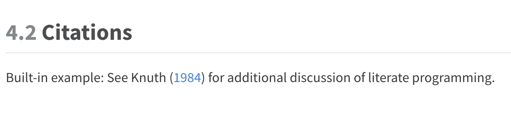
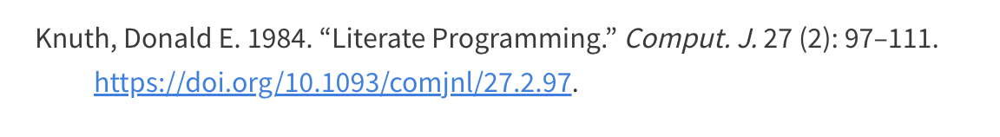
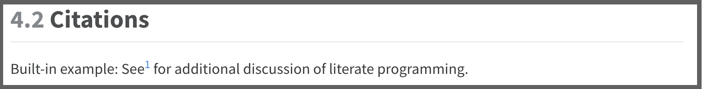
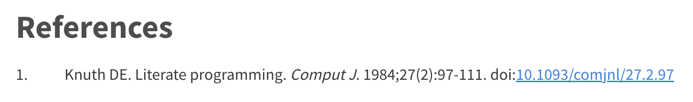

4 Cross References
When authoring the book, it is common to need to cross reference book parts (i.e., chapters, sections), figures, tables, and I’m going to go ahead and include citations here too.
4.1 Book parts
Link to the official documentation. Briefly, there are two methods that I’m likely to use.
4.1.1 Reference a chapter
First, you need to make a chapter/section heading available to be referenced by adding {#sec-} behind the header. For example:
# Images {#sec-images}Then to reference it you type @sec-. For example:
See @sec-images to learn about images.Which looks like this: See Chapter 7 to learn about images.
Label Prefix
In order for a chapter to be cross-referenceable, its label must start with the sec- prefix.
If I don’t want @sec-images to automatically be replaced with Chapter 7 – for example, I want it to say the images chapter instead – then I think I will need to use hyperlinks ( below). For example,
See [the images chapter](../images/images.qmd)Which looks like this: See the images chapter
Hyperlink file paths
When using hyperlinks to connect chatpers/sections, make sure to use the full file path (originating from the current qmd file). For example, use ../images/images.qmd instead of just images.qmd. If you change the file structure, you may break the links. This is one reason why you may want to use that @sec- syntax whenever possible.
Chapter sections work the same way. You are able to cross-reference any heading at any level. For example,
4.2 Citations
Built-in example: See1 for additional discussion of literate programming.
Add a CSL file to the repo. For example, this repo has a file named
ama.csl. The Quarto Citations and Footnotes documentation also includes links to download CSL files for a variety of citation formats.Update the
csl:option in_quarto.yml. For example,csl: ama.csl.
Here is what the default @knuth84 citation above looks like after rendering this document.
Here is what the default @knuth84 reference looks like after rendering this document.

Here is what the @knuth84 citation above looks like after changing the citation style to AMA and rendering this document.

Here is what the @knuth84 reference looks like after changing the citation style to AMA and rendering this document.

4.3 Footnotes
I haven’t done a lot of footnotes in the past, but here is some documentation in case I want to do them in the future.1
4.4 Glossary
Following the emphasizing text guidance in the R4Epi Wiki, we sometimes want to hyperlink words that we will define in the Glossary. We can definitely link selected words in the narrative of the chapers to headers, but I haven’t been able to figure out a way to link them to words in the glossary that aren’t headers. Therefore, the best strategy so far seems to be to make the glossary words headers, style them with CSS, then link words in the narrative of the chapters to those headers in the glossary.
For example, let’s say that we want to define the term data frame in the glossary. The first thing we do is turn the word “data frame” into a header and assign it an ID. For now, I’m planning to prefix all glossary IDs with the word “glossary” in case I need to search for them later.
## Data frame {#glossary-data-frame}Next, use a hyperlink to reference that header in the narrative of the chapter. For example,
We want to define the term [data frame](../appendices/glossary.qmd#glossary-data-frame) in the glossary.Which looks like this: We want to define the term data frame in the glossary.
This works, but the word “data frame” is numbered and styled like a section header in the glossary. That isn’t the look we are going for. We can remove the numbering by adding the .unnumbered class to the header like this.
## Data frame {#glossary-data-frame .unnumbered}I tried to further adjust the CSS. I got it to work, but it didn’t affect the PDF. So, I think it may be best just to stop here for now.
There is one additional problem. Linking to headers like that causes each term to appear in the PDF table of contents. That could get really long.
Thanks to this SO post, I think I figured out a solution. In glossary.qmd, write the glossary term like this.
<a name="glossary-test-word">Test word</a>Next, use a hyperlink to reference that header in the narrative of the chapter. For example,
Does [this word](../appendices/glossary.qmd#glossary-test-word) work?Which looks like this: Does this word work?
Then, let’s style it in the CSS file.
This works for the HTML version of the book, but not the PDF version. Specifically, the links aren’t active and the css styling isn’t applied.
Here is the solutions I got from Julian on SO.
Pandoc already supports defintion lists, which for HTML output render to desciption list (
) elemements. – all credits to salim!
So, use the following syntax in the glossary
# Glossary {.unnumbered}
[Test definition]{#glossary-test-definition}
: This is a test glossary term that I'm try to reference in @sec-crossrefs without making it a header. I don't want to make it a header because that makes the table of contents really long when rendering to PDF (see [this gh issue](https://github.com/orgs/brad-cannell/projects/3/views/4?pane=issue&itemId=33310870)).Then, use a hyperlink to reference that header in the narrative of the chapter. For example,
Does this [test definition](../appendices/glossary.qmd#glossary-test-word) work?Does this test definition work?
And here is an example footnote.↩︎